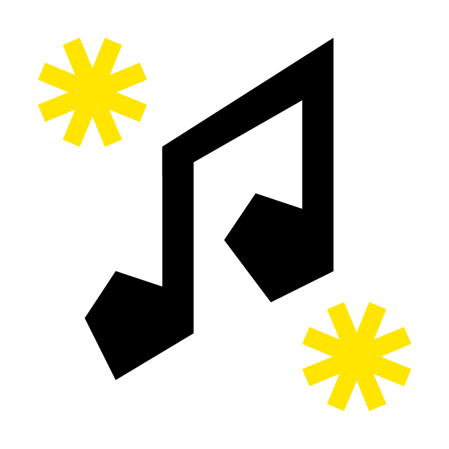
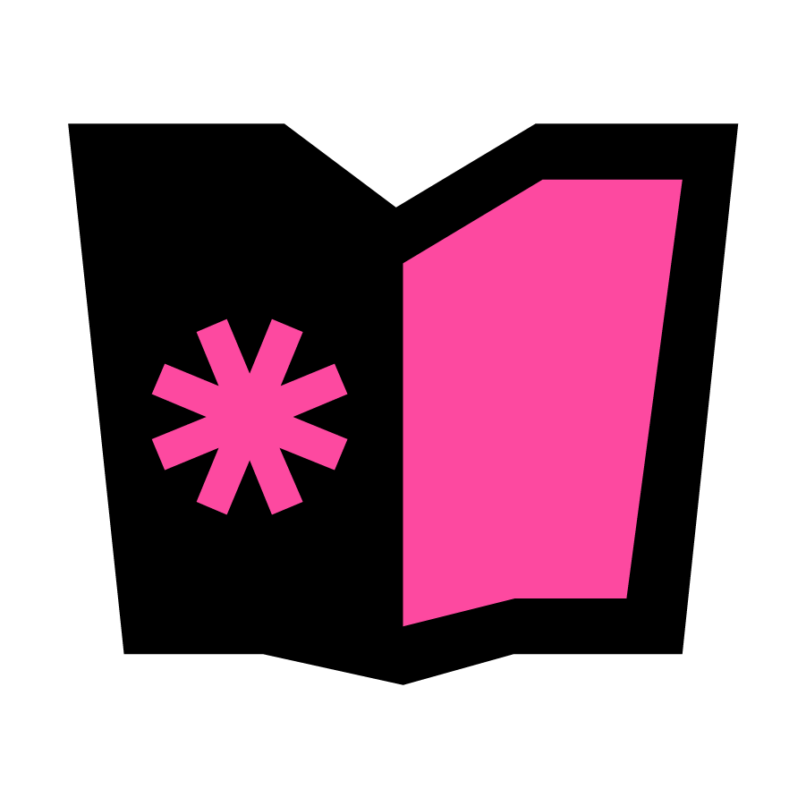
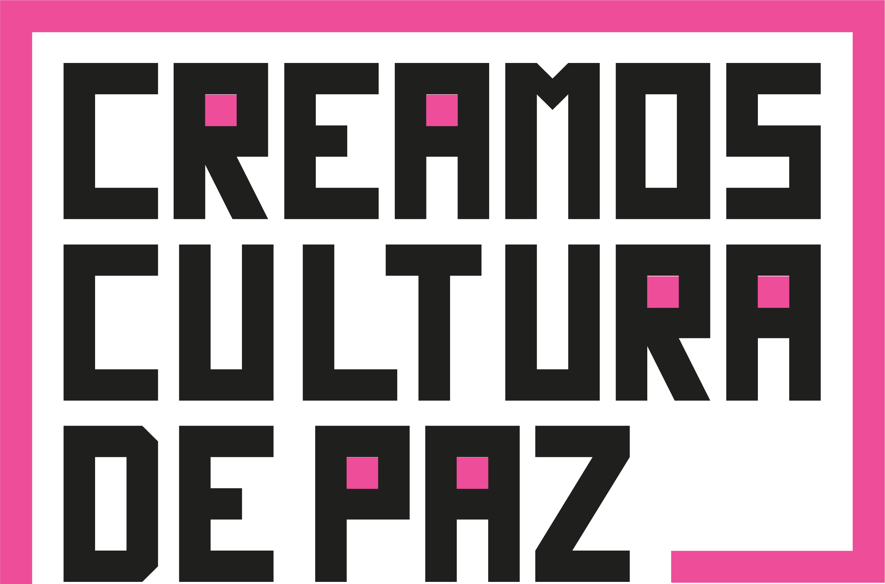
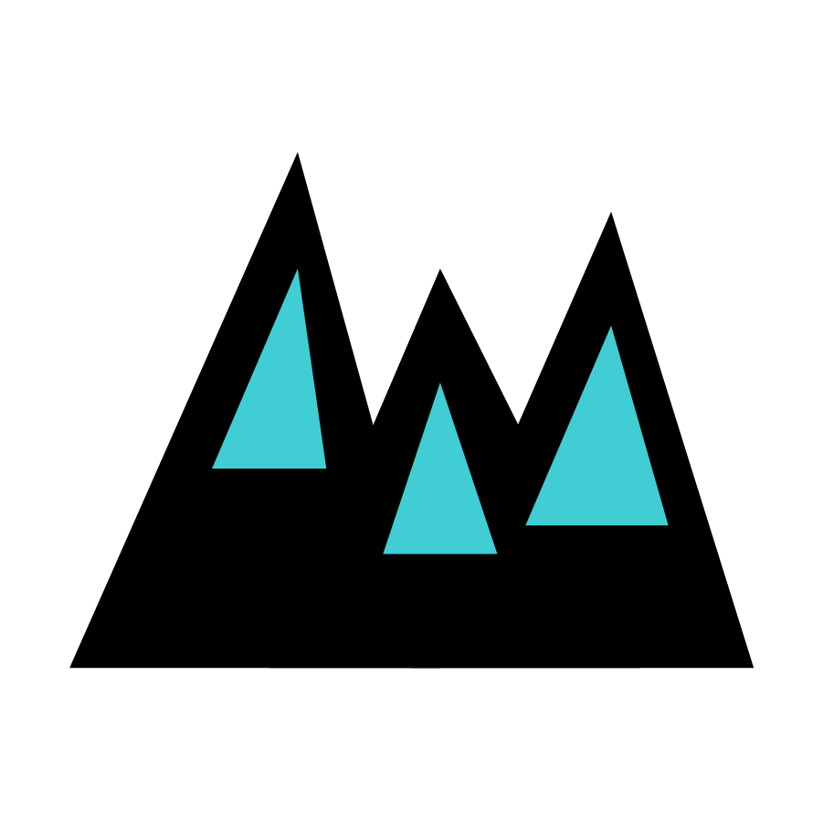
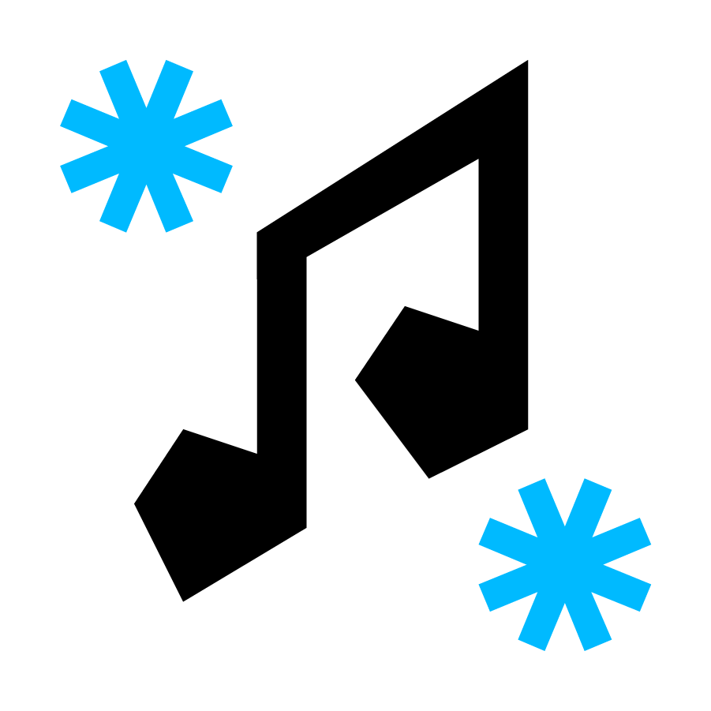
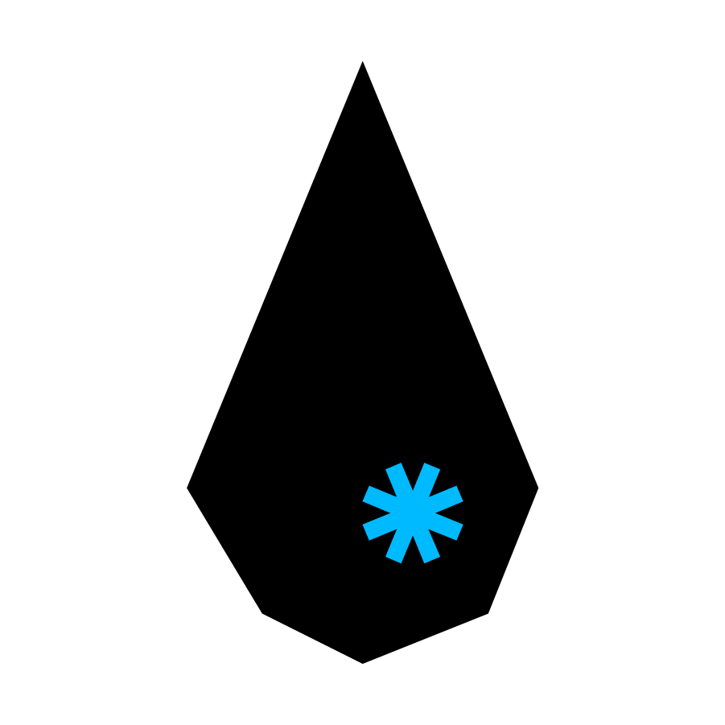
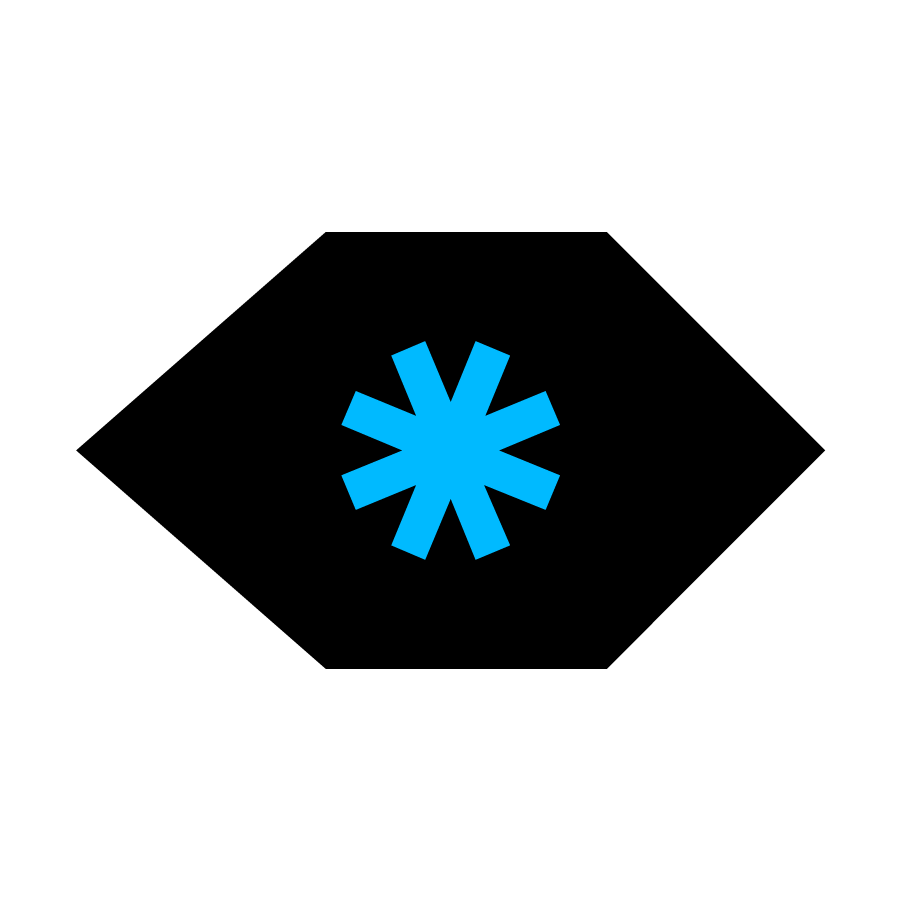
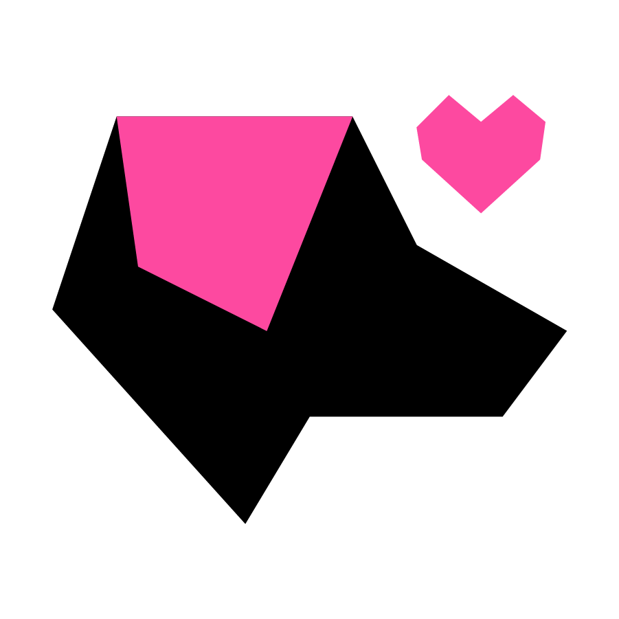

Ley Artes al Aula — Ley 2555 de 2025
Desliza para explorar • Toca los puntos para ampliar
Desliza para explorar • Toca los puntos para ampliar

Declaración de Bogotá · RedArtes
"El arte no es un privilegio, es una herramienta pública para transformar la vida."

Ley 2555: El arte ya no es opcional en la escuela pública colombiana.
RedArtes: Cooperación técnica de 20+ países iberoamericanos para blindar la educación artística.
Declaración de Bogotá: Acuerdo regional que posiciona las artes como pilar del desarrollo integral.



Lenguajes artísticos que transforman la práctica pedagógica.
Capacitación permanente en pedagogías de las artes.

Integración en circuitos iberoamericanos de sistematización.
"La educación artística no es un adorno curricular, es un derecho"


De inicial a media: pensamiento crítico, empatía y ciudadanía.
El arte mejora el clima escolar y cierra brechas entre lo urbano y lo rural.
Competencias para las industrias culturales y la educación terciaria.
Sistema articulador de datos para decisiones de política artística y cultural.
Alineación · Transparencia · Gestión de calidad · Coordinación intersectorial.
MinCulturas + MinEducación: dos ministerios, un propósito.
Misión, Visión y Manual de Convivencia con el arte como eje.
Plan de estudios transversal y evaluación artística (SIEE).
Recursos, espacios y presupuesto (POA) para la práctica artística.
La escuela como nodo de cultura y Aula Expandida.
